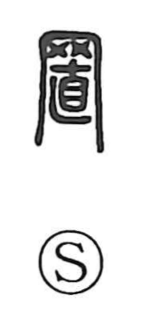

置

Uncategorized
Kun: oku | On: chi
to put ・ to place ・ to set
Explanation
A phono-semantic character: the upper 罒 depicts a net and conveys the act of erecting or stretching a fine mesh, while the lower 直 serves as the phonetic element (choku), yielding the on reading chi, as also seen in 値. Classical passages, such as in the Lüshi Chunqiu, describe nets set up on all sides, capturing the image of surrounding and hanging bird nets in every direction. From this concrete act of setting up a net, the character broadens to mean putting or setting something in place, leaving it as it is, and by extension arranging things so as to secure a gain or benefit (mokeru).